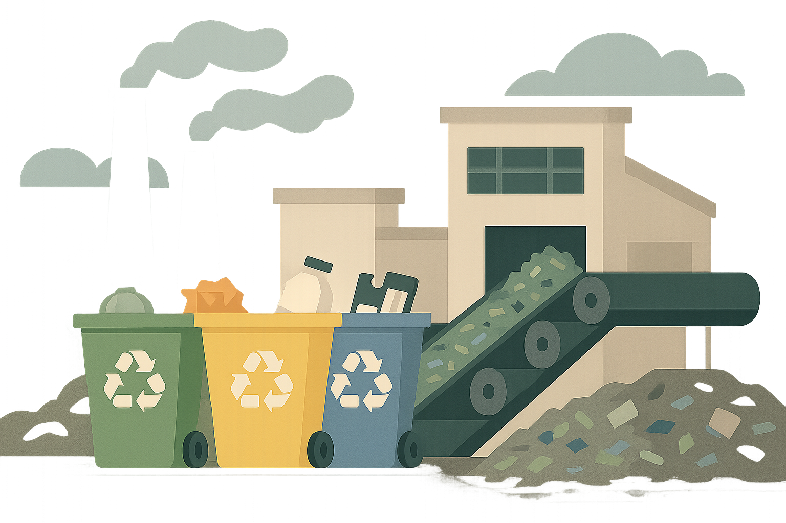

Reduz Poluição
O descarte incorreto de aparelhos libera substâncias como chumbo, cádmio e mercúrio, que podem infiltrar no solo e alcançar lençóis freáticos. Ao levar seu e-lixo aos pontos de coleta, você interrompe esse ciclo de contaminação e evita danos à fauna, flora e à saúde humana.